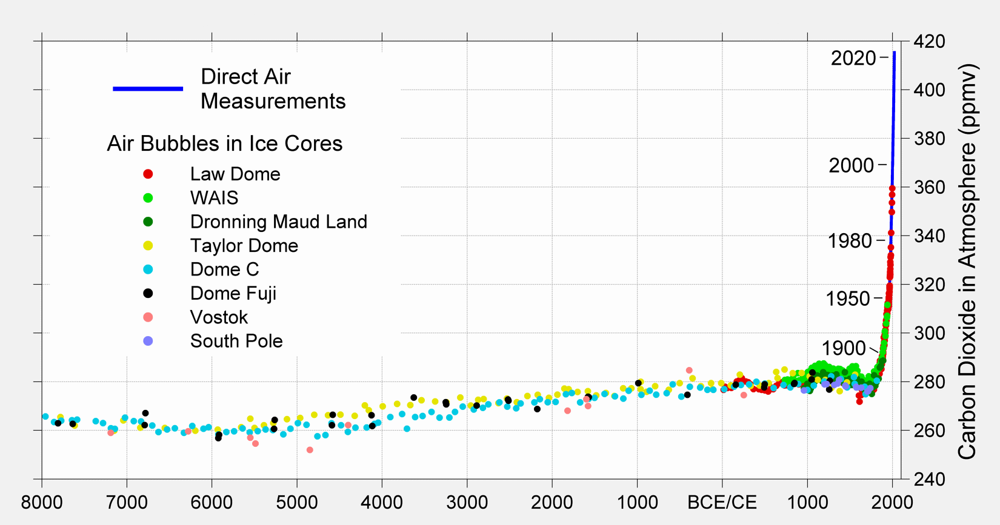
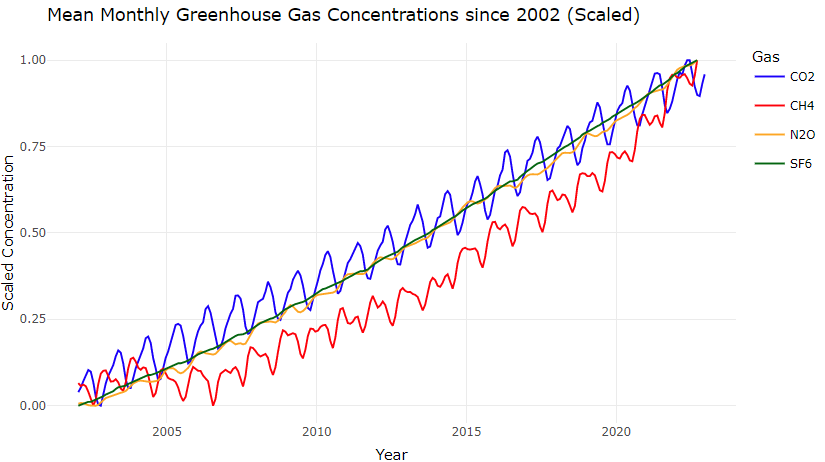
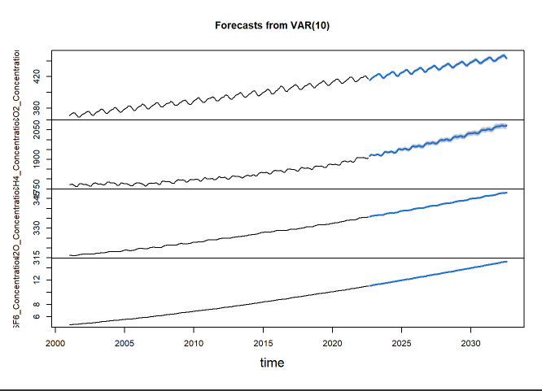
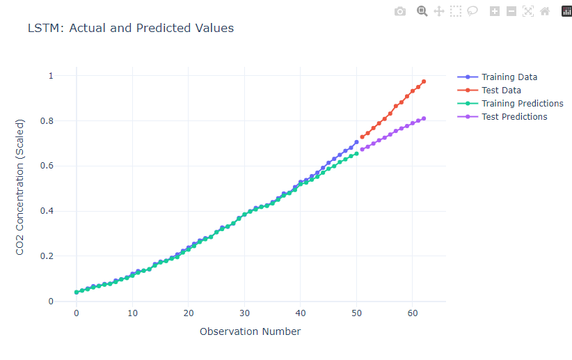

Conclusions
In conclusion, my project “Exploring Atmospheric Concentrations of Greenhouse Gases with Time Series Analysis” has revealed many insights concerning greenhouse gas concentrations and their possible consequences on our climate. Throughout this exploration, different time series techniques have been employed to determine relationships between four greenhouse gases, carbon dioxide, methane, nitrous oxide, and sulfur hexafluoride. One of the most important findings was one of the simplest, despite coming from many of the same sources and generally following an increasing trend, the are serious differences between the four greenhouses in terms of seasonality ad short term trends. These differences can have severe environmental impacts beyond the basic understanding of just CO2 increases. Mental lenity could be pointed toward the continuous increase of sulfur hexafluoride (SF6), an extremely potent greenhouse gas, whose levels have risen nearly threefold since 1997.

Another fundamental observation from this study is that higher global mean temperatures correlate to increased greenhouse gas concentrations, particularly carbon dioxide (CO2). Given that regulating CO2 emissions is crucial for mitigating global warming, the accurate forecasting of CO2 concentrations using the SARIMA(1,1,1)(0,1,1) model developed in this project can serve as a valuable contribution in addressing the challenges posed by climate change. Additionally, by employing a Vector Autoregression (VAR) model to explore the multivariate relationships involving multiple greenhouse gases, this project provides an additional source of insights into the potential directions of future greenhouse gas concentrations. Decision-makers can utilize these forecasts to navigate policymaking choices for mitigation and adaptation, although it is crucial to undertake a cautious interpretation of anticipated projections, considering probable uncertainties and changes.

The study of carbon dioxide atmospheric concentration using the SARIMA model, vector autoregression, and deep learning techniques provided a comprehensive understanding of how these variables influence each other and predict future trends in greenhouse gas emissions. Using deep learning models resulted in more accurate predictions, demonstrating that they might serve as a novel and innovative approach to time series analysis of greenhouse gas data. By utilizing real-world data acquired from sources such as the Global Monitoring Laboratory (GML) and the Environmental Protection Agency (EPA), the results are demonstreated to be accurate and ecologically relevant. Our findings contribute to the efforts directed towards effectively fighting global warming and climate change, empowering the authorities and policymakers in developing sustainable strategies for the future.

I also examined Exxon’s stock return volatility offered an exciting cross-disciplinary investigation into financial markets and time series analysis. While ultimately finding the more complex GARCH model did not offer significant performance advantages over simpler ARIMA, this research reaffirmed the importance of tailoring models to specific applications and iterating to identify the best possible outcomes.

Lastly, aside from its quantitative contributions, this project discusses environmental protection, informing academics and concerned citizens, with collective resonance towards crafting innovative proposals that turn these findings into a roadmap preparing humans for an increasingly era of climate catastrophes. Going forward, further work could be done to refine and expand upon some of the areas of time series analysis used in this project. Employing different types, periods, and geographic location sets while incorporating influencing factors such as emissions regulations, geo-political factors or socio-economic indicators in the models would improve the efficacy of the conclusions and their applicability to real-world scenarios.
This project has demonstrated the power and versatility of time series analysis in analyzing patterns, relationships of greenhouse gases, and forecasting the environmental impacts, paving the way for actions devised at fighting against climate change. Through evaluation, the evidence demonstrates the project’s role not only in carving a sophisticated and nuanced modeling approach to an environmental need but also to engineer ideas for the future.